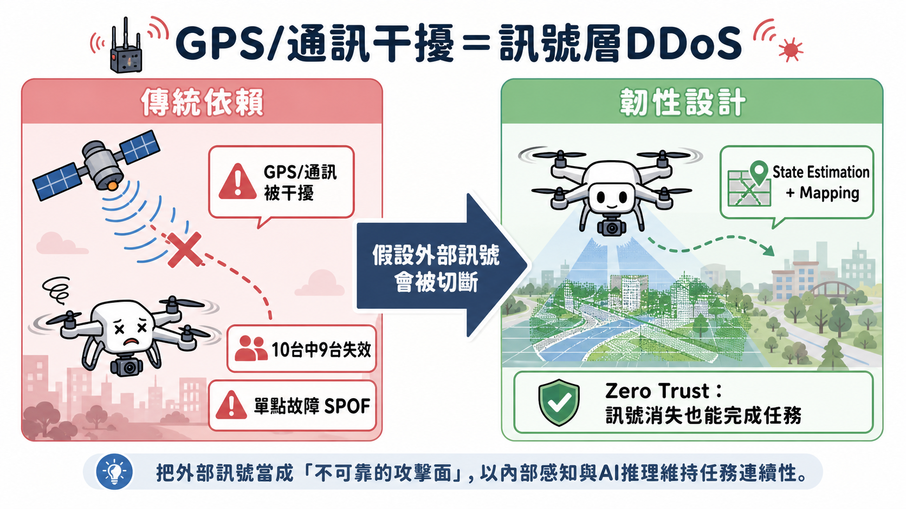
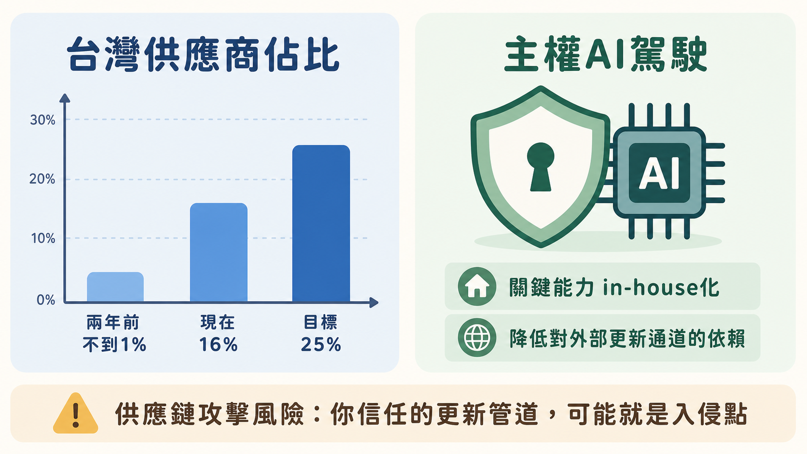

這集表面上是一集國防科技訪談，但如果你是資安從業者，裡面其實藏著三個你每天都在處理的問題的軍事版本：訊號層的可用性攻擊、持續迭代的紅藍對抗，以及供應鏈與第三方依賴的風險治理。以下從這三個角度拆解。
一、GPS / 通訊干擾，本質上是一場「訊號層 DDoS」
Brandon 講了一個數字：在 GPS 與通訊都被干擾的環境下測試市面上的一次性攻擊無人機，10 台裡面大概只有 1 台能正常運作。他用的形容詞是「不可接受」。
從資安角度看，這句話換個說法你應該很熟悉：「我們的系統有 90% 的元件，在關鍵相依服務（GPS/通訊）失效時會直接停擺」。這就是典型的單點故障（SPOF）加上對外部信任源的過度依賴——只是這裡的「外部信任源」是衛星訊號，而攻擊者是電子戰部隊。
Hivemind 的解法（state estimation + mapping，邊飛邊建圖、靠相對位置導航）對應到資安架構裡的概念，其實就是「假設你信任的外部訊號隨時會被拿走，系統仍要能在本地降級運作」——這正是 zero trust 的精神延伸到實體世界：不是「驗證後才信任」，而是「連可驗證的訊號本身都可能消失，所以核心邏輯不能建立在它上面」。
可以帶走的觀察：當你在做架構韌性設計（resilience design）時，問自己一個 Brandon 式的問題——「如果這個外部依賴被切斷，剩下的系統還能完成核心任務的幾成？」如果答案是接近 0%，那這個依賴就是你的關鍵攻擊面。

二、「貓抓老鼠」：電子戰的迭代循環，就是紅藍對抗的軍事版
Brandon 描述了一個很真實的循環：Shield AI 解決了烏克蘭戰場上的 GPS/通訊干擾問題後，俄羅斯就研發新的干擾手段，Shield AI 再去解新出現的問題——「這是一個一直在進行的貓抓老鼠遊戲」。
這跟資安裡紅隊（attacker）與藍隊（defender）的關係幾乎是同構的：沒有「解決完」這回事，只有「目前領先一步」。差別在於，戰場上的回饋週期是以「天」計算（每天每次任務都在被干擾），而很多企業的資安回饋週期是以「季」甚至「年」計算（滲透測試、紅隊演練的頻率）。
Shield AI 之所以能維持領先，關鍵在於他們有真實戰場的高頻回饋迴路——烏克蘭每個月會用實際數據幫所有無人機部隊排名（V-BAT 平均偵測距離排第一）。這是「用實戰數據驅動迭代」的極端案例。
可以帶走的觀察：如果你的組織做資安演練的頻率，遠低於攻擊者迭代手法的頻率，那你不是「目前領先一步」，而是「目前落後一步但還沒發現」。
三、供應鏈集中度與「主權系統」：GRC 視角下的第三方風險治理
訪談裡有兩個數字特別值得資安/風險治理的人留意：
- 供應鏈集中度的刻意分散：Shield AI 的台灣供應商佔比，從兩年前不到 1%，提升到現在 16%，目標 25%。這是一個典型的「降低對單一地理區域/供應商集中依賴」的風險治理動作——跟資安裡建議企業不要把所有雲端服務、所有金鑰管理都押在單一供應商上，邏輯完全一致。
- 「主權 AI 駕駛」的真正意涵：中科院在建立台灣自己的 AI 駕駛能力，Brandon 給的理由很直白——台灣不會想在開戰時還得「打電話給 Shield AI 或美國，問可不可以更新我們的 AI 駕駛」。
第二點如果翻譯成資安語言，其實是在描述「關鍵基礎設施不應該依賴外部廠商的更新通道」這件事的軍事極端版本。想像一下：如果你的核心防禦系統的安全更新，在你最需要它的時刻（戰時、攻擊發生時），必須透過一個可能被切斷、被監聽、甚至被中間人攻擊的外部通道才能取得——這個更新通道本身就是攻擊面。這跟近年資安界對供應鏈攻擊（如 SolarWinds 類事件）的擔憂是同一條邏輯線：你信任的更新管道，本身可能就是入侵點，或在關鍵時刻不可用。
「主權 AI 駕駛」=「關鍵能力 in-house 化，降低對外部更新通道的時間風險與信任風險」，這個框架其實可以直接拿來檢視一個企業的資安架構：哪些「關鍵防禦能力」是你自己能在離線狀態下維運的？哪些是綁死在某個 SaaS 廠商的雲端控制台上，一旦對方服務中斷或被入侵，你就跟著裸奔？

四、給台灣資安從業者的攻防一體延伸思考
這集對台灣的資安/技術從業者來說，其實指向一個正在成形、但還沒被太多人注意的交叉領域：國防科技 × AI 自主系統 × 電子戰防禦。幾個值得關注的方向：
- Resilience engineering（韌性工程）正在從「機房」走向「戰場」：state estimation + mapping 這類「假設關鍵外部訊號會消失」的設計思維，跟 SRE 領域的 chaos engineering（主動演練依賴失效）本質相通。如果你做過 chaos engineering，你已經具備理解這類系統設計的基礎詞彙。
- 嵌入式系統與訊號安全會越來越重要：無人機、無人船這類自主系統，本質上是「會移動的 IoT 裝置 + 即時感測融合」，它們的安全問題（韌體簽章、感測器欺騙/spoofing、通訊鏈路加密）跟傳統 IT 資安的工具箱有重疊，但威脅模型不同——攻擊者不只想偷資料，更可能想讓系統「物理性地走錯路」。
- GRC 不只是合規文件，是國家層級的籌碼：台灣立法院砍掉部分國防特別預算（包含無人機與 AI 輔助 C5ISR 項目）這段，提醒我們技術能力與採購治理是兩條不同的賽道——再好的韌性架構，如果無法通過治理流程拿到資源，就停留在展示階段。對企業資安主管來說，這是一個熟悉的處境：再好的資安架構提案，沒通過預算審查一樣是空談。把「技術說服」和「治理說服」當成兩個需要分別投入的技能，而不是假設技術夠好治理自然會跟上。
延伸思考：Brandon 說「電子戰是會演化的」，這句話拿掉「電子」兩個字，套用在任何資安領域都成立——「威脅是會演化的」。Hivemind 的設計哲學不是「打造一個無法被干擾的系統」（這在物理上不可能），而是「打造一個假設會被干擾、仍能完成核心任務的系統」。這個「假設失效仍可運作」的思維，或許才是這集對資安人最值得帶走的一句話。
附錄：完整逐字稿（清理版）
以下為 EP162 訪談的逐字稿整理，已移除時間戳記並重組為段落式對話，方便閱讀與檢索。
主持人：嗨 Brandon，非常感謝你今天參加我們的節目，真的很榮幸能邀請到你。進入正題之前，可以先簡單介紹一下你自己跟 Shield AI 在做什麼嗎？
Brandon Tseng：好，非常感謝你邀請我。我叫 Brandon Tseng，我是 Shield AI 的總裁與共同創辦人。創辦 Shield AI 之前，就在 11 年前的今天，我還是一名美國海軍海豹部隊員。我兩度部署到阿富汗，一次到太平洋戰區，一次到阿拉伯灣。我是機械工程背景，非常期待今天跟你聊。我們的使命是用人工智慧系統保護軍人跟平民。為了實現這個使命，我們正在打造世界上最好的 AI 駕駛跟下一代飛行器。AI 駕駛最簡單的理解方式，就是無人系統的自動駕駛技術，跟 Tesla 或 Waymo 在做的事一樣，接收一堆感測器資訊，思考這些資訊，然後在物理世界裡執行動作。Shield AI 把同樣的技術用在軍用無人系統上。我們做的 AI 駕駛叫做 Hivemind，我們已經把它應用在 28 種不同類別的載具上。另外我們現在也在做兩款飛行器，我們做 V-BAT，一架偵察無人機，還有 X-BAT，這是首款垂直起降的戰鬥機，由 Hivemind 擔任 AI 駕駛。
主持人：我第一題想回到你還在海豹部隊的那段時間。幾週前我讀了一本書叫《Project Maven》，你接受了作者的訪談，你提到在阿富汗時，因為 Palantir 的軟體救了你一命。我很好奇那一刻發生什麼事，對你來說意義是什麼？
Brandon Tseng：是，跟 Palantir 那段經驗真的很特別。我們 2013 年在用他們的軟體，我跟 Shyam Sankar、Alex Karp 都講過這個故事。我前陣子才接受一部關於 Palantir 的紀錄片訪談，講的就是這個故事。他們的產品幫我們把所有情報資訊組織起來，整理成像我這樣的人能消化、能根據它做更好決策的東西。在這個特定案例裡，它提供我們所有 IED SIGACT 的位置資訊，也就是簡易爆炸裝置埋設地點周邊的重大活動紀錄。長話短說，我們被指派去一個村子執行清剿任務，我去查 Palantir，情報畫面顯示這個村子滿是簡易爆炸裝置，而且沒有任何戰略價值。我就拿這份情報去說服我的指揮官不要執行這個任務，後來一群海豹部隊隊員跑來謝我，為他們挺身而出。但如果沒有 Palantir 的產品我根本做不到。我覺得那是我第一次真正體會到一個產品、一個軟體產品在國防上有多大的力量。老實說，我創辦 Shield AI 的時候沒有特別想到這件事，是後來回頭反思，才覺得原來在國防產業，有一家公司已經把這條路走出來了。我把 Palantir 當成 Shield AI 的標竿，他們證明了一家公司可以在這個產業裡真的對任務產生影響。
主持人：那從阿富汗回來之後，2015 年你跟哥哥 Ryan 還有 Andrew Reiter 一起創立 Shield AI，你們的第一個產品是一架小型直升機叫 Nova，會飛進建築物、走在士兵前面。我的理解是，Nova 上面跑的就是 Hivemind 對嗎？
Brandon Tseng：對，Nova 是 Hivemind 驅動的，沒錯。
主持人：我很好奇為什麼第一個產品就是飛進建築物的無人機，為什麼從這裡開始？
Brandon Tseng：是，這題很棒。我們從一架可以飛進建築物的無人機開始，首先，這是一個我非常熟悉的問題，而且對軍方來說是個超重要的問題。自 2001 年以來，沒有任何任務比近距離室內作戰造成更多軍人陣亡。我們想做一架室內四旋翼無人機，可以幫忙解決這個問題。我們也把它看成一塊很好的墊腳石。沒有人會把 F-16 的鑰匙交給一家只有三個人、沒有任何成功紀錄的公司，你得先努力贏得那把 F-16 的鑰匙。透過讓一架小型四旋翼無人機飛進建築物，我們可以讓人看到 AI 駕駛是什麼，也可以真的開始給客戶交付價值。我常跟投資人講，我們的四旋翼無人機就像我們的 Tesla Roadster，Tesla 做跑車不是要當一家跑車公司，而是用它當墊腳石，邁向更大、對世界更具戰略影響的位置。我們把那架四旋翼當成墊腳石，讓人看到 AI 駕駛的價值，同時把我們墊到更具戰略影響力的任務位置。這個產品我們真的很自豪，它在阿富汗、伊拉克、敘利亞都被使用過，會飛進一些建築物裡，自殺炸彈客看到 Nova 飛進來，會直接引爆自己，所以它確實把軍人安全帶回家，回到家人身邊。
主持人：所以 Palantir 的軟體在那一刻救了你，這跟後來 Nova 的誕生有關連嗎？
Brandon Tseng：Nova 確實在各種任務上救了軍人的命。Nova 的靈感其實是來自我做的一次訓練任務，我記得那時候我還是海豹部隊員，我們在做訓練，會玩真人對抗，用塗料彈互射。我每一步都做對了，我們在清這棟建築，結果還是被一發塗料彈打中臉。這件事要嚴肅看待，如果是真子彈我就死了。我心想，我什麼都做對了，為什麼還是輸？我完全按照訓練執行，做得無懈可擊，但戰場上有句話：敵人也有發言權。這件事再次驗證，這套已經危險這麼久的任務一定有更好的做法。
主持人：那 2018 年的時候，有任何人在把 AI 放進無人機嗎？
Brandon Tseng：2018 年沒有人在無人機上做 AI，回頭看真的滿驚人的。2015 年的時候，大家以為 AI 是用來辨識貓咪照片的，即使到了 2017、2018 年，Maven 計畫啟動的時候，講的也是 AI，而那也是圖像分類。不知道為什麼，大家就是不理解 AI 可以放在實體裝置上、讓它在物理世界裡導航。我滿感謝黃仁勳後來在講實體 AI，說穿了就是自動駕駛這件事。但對，不知道為什麼，那時候大家就是不懂。
主持人：那早年最難的部分對你跟 Ryan 來說是什麼？
Brandon Tseng：最難的是打造一個自主系統，我會說兩個最難的部分就是技術跟市場。還有當然早期的投資人，那真的很難。但我會說產品其實更難，然後打進政府市場可能是最難的事，因為很多軍方市場只有在有需求的時候才會買，但根本沒有書面的需求規格，沒有任何官方驗證的需求。沒有人說過「我要一個跑 AI 駕駛的無人系統」，更沒有人說過「我要一個會自己飛進建築物的 AI 四旋翼無人機」。所以這個專案根本沒什麼預算，因為沒人知道這件事是可能的。這件事我跟美軍、美國國會、各國軍方溝通了很久，你不會想要客戶來定義他們的需求，你不會想要他們說「你應該照這個規格做」，你會想要他們描述問題，然後讓創業家、讓公司去想出解決問題的最佳方式。這可能就是最難的事，現在還是最難的事。時至今日，難的不是產品，不是技術，是市場。在這些軍方採購系統裡運作非常具有挑戰性。
主持人：五角大廈一直想買更多硬體，而不是軟體。
Brandon Tseng：對，這是其中一件事，就是要幫他們理解軟體的價值。我認為 Shield AI 在這部分有了不錯的進展。我花了很多時間跟美國空軍談把 CCA（協同作戰飛機）計畫的硬體跟軟體採購切開來。所以 Shield AI，你應該看到了，我們被選為 Anduril Fury 在空軍 CCA 計畫上的 AI 駕駛提供商。Anduril 是硬體提供商，Shield AI 是軟體提供商，合作非常順利，但這件事的意義是讓軍方跟政府理解，如果你想要更有競爭力的軟體、更好的軟體產品，你應該把它拆分出來。
主持人：那我們得切進 Hivemind 本身，對剛接觸 Shield AI 的聽眾，可以簡單講一下 Hivemind 怎麼運作嗎？
Brandon Tseng：好，我會用很簡單的方式講，然後可能再深入一層。第一層很簡單：你跟我，我們都是自主系統對吧？我們用眼睛、耳朵、感官感知環境，再用大腦思考這個世界，再用肌肉跟骨骼支撐去移動，所以我們就是自主系統。Hivemind 跟你我一樣，也跟自駕車一樣，所以它感知世界，用 GPU 思考這個世界，然後驅動馬達跟方向控制去導航。它從經驗中學習，跟你我從經驗中學習是一樣的。核心來看，Hivemind 是一個 AI 跟自主框架。如果再深一層，它是由一系列不同的軟體模組組成的。有一個 state estimation（狀態估計）模組，基本上就是估計自己的位置。還有一個 mapping（測繪）模組，在腦中繪製世界，這是不靠 GPS 也能飛的關鍵。還有一個 path planning（路徑規劃）模組，下一步該怎麼走。一個 global reasoning（全域推理）模組，這就是你這次的任務是什麼。還有一個 scene understanding（場景理解）模組，用來協助導航，辨識那是人、是武器還是其他目標。最後一個是 controls（控制）模組，負責驅動馬達導航。這六個模組構成了在無人系統上運作的 AI 駕駛。
主持人：我們知道現代戰爭充滿電子戰，所以開戰第一件事就是敵人會干擾 GPS、切斷通訊。Hivemind 怎麼處理這個？你怎麼在沒有 GPS 的情況下繼續飛？
Brandon Tseng：GPS 沒了，你就靠 state estimation 模組跟 mapping 模組對吧？因為它一邊飛一邊建地圖。就像我走進這個房間的時候，腦中就建了房間的地圖。在這張地圖裡我不需要 GPS 來告訴我我在哪。Hivemind 在這些系統上做的就是這件事，讓它們可以在 GPS 或通訊被干擾的時候繼續運作。我們的 V-BAT 由 Hivemind 驅動，我們也在烏克蘭操作由 Hivemind 驅動的一次性攻擊無人機。每一天、每一次任務，GPS 跟通訊都被干擾，現在不到 10 分之 1 的無人機或一次性攻擊系統能在那種環境下正常運作。這對台灣的國家安全、台灣海峽的安全絕對是個問題，因為中國一定會做一模一樣的事。
主持人：接下來談 V-BAT，它是你們現在的主力飛行器，它很小，只有 180 磅，垂直起降。V-BAT 今天做的事，是以前那些更貴的無人機做不到的嗎？
Brandon Tseng：是，V-BAT 是一架偵察無人機，做 Predator、Reaper 或 MQ-4 Triton 的任務，但價格只是它們的一小部分。一架 Predator 或 Reaper 大概 4000 萬美元，一架 V-BAT 大概 100 萬美元。我們在做一模一樣的任務，這個任務說穿了就是情報蒐集。第一名的問題不是武器短缺，是情報短缺。他們沒有一隻一直在天上看著海峽的眼睛。V-BAT 提供的就是情報跟目標畫面，給我們全世界的客戶，我們也希望把 V-BAT 帶進台灣，給海巡署、給海軍，協助提供整個島嶼周邊的海域情報畫面，一天 24 小時、一週 7 天。
主持人：那 V-BAT 現在在台灣有用嗎？
Brandon Tseng：還沒，我們正在努力讓它在台灣啟用。我們在跟國防部、海軍、立法院、行政院談，這個能力被認定是重要的，我希望台灣有這個能力，因為它對嚇阻衝突來說很關鍵。
主持人：那接下來談 X-BAT，它是無人戰機、垂直起降跟超音速的一大躍進，這幾年跑道一直在開戰第一天就被炸掉。過去這幾場戰爭是不是把 Shield AI 推向 X-BAT 這條路？
Brandon Tseng：其中一個大差別是，V-BAT 是 180 磅的偵察無人機，X-BAT 是 AI 駕駛的戰鬥機，滿載燃料跟武器是 2 萬磅，做的是第 5 代或第 6 代戰鬥機或轟炸機的任務，價格只是一小部分。X-BAT 不需要跑道，跑道往往是戰事爆發後的首要攻擊目標，美國損失了 25 億美元的飛機，在伊朗的衝突裡，絕大多數是在跑道上被打掉的。X-BAT 會讓他們不必再依賴跑道，這就是我們在做的。
主持人：我關注你的 Twitter 也就是 X 有一陣子了。你之前分享過 Kelly Johnson 的訪談，Kelly Johnson 是洛克希德臭鼬工廠的負責人，他生前最大的遺憾是沒做出垂直起降戰機，現在 Shield AI 的 X-BAT 可以做到了。你們是怎麼做到？
Brandon Tseng：要先把功勞給回那些當年做垂直起降的人。美國空軍 1950 年代就有一架垂直起降戰機叫 X-13，跟 Shield AI 今天用 X-BAT 在做的基本上是同一個概念。差別只在它用人類飛行員，一個飛行員要垂直降落一台飛機，但他從頭到尾都得抬頭看天空，根本看不到自己要降落的地方。第二件事是引擎技術，1950 年的引擎技術還不夠好。我們用的是 GE F-110，跟 F-16 同款引擎，所以我們可以飛很久，載真正有用的武器跟設備。然後我們把人類飛行員拿掉了，用 AI 駕駛，所以不會有人類飛行員需要邊看著天空、邊垂直起降這種事。
主持人：那來談台灣，你 2 月跟中科院簽了整合合約，可以講一下漢翔跟中科院兩個合約是什麼？
Brandon Tseng：我們在這裡做三件事：V-BAT、X-BAT、Hivemind。跟漢翔的合作是 V-BAT、X-BAT 跟 Hivemind，漢翔在 V-BAT 上跟我們合作，協助我們跟海軍展開作業，也跟海巡署合作。跟中科院的合作是支持台灣本地產業跟國防部一些 AI 跟自主能力。我們在中科院投資 Hivemind，支持他們建立台灣第一個主權 AI 駕駛，我們在支持並協助他們建立。為什麼這件事重要？台灣不會想要在戰爭發生的時候，還得問 Shield AI 或美國可不可以更新他們的 AI 駕駛。他們會想要這個能力是自己的，就跟台灣自己造潛艦一樣。
主持人：那 5 月 8 日剛發生的事，台灣立法院從國防特別預算砍了 4170 億新台幣，包含無人機跟 AI 輔助 C5ISR。你怎麼看這件事？
Brandon Tseng：這次通過的國防特別預算，我覺得對台灣國家安全來說是個很好的進展。我們在台灣是長期投資，會是很多年。所以這只是一次國防特別預算，我們現在想確保的是，像偵察無人機這種能力可以保留下來。V-BAT 之前被歸進直接商售這個項目，而立法院確實沒讓直接商售那邊的項目通過。所以我現在在做的事情之一，就是跟國防部、海軍、立法院、行政院談，確保海軍跟海巡署能拿到這些能力。
主持人：那 5 月 13 日你跟雷虎簽了合作備忘錄，把 Hivemind 整合進海鯊號，今年夏天會有一次現場展示，這是 Hivemind 第一次在台灣從空中跨到水面？
Brandon Tseng：在台灣是第一次，但這是我們第二次做這件事。我們跟美國最大的造船商 Huntington Ingalls Industries（HII）合作，替他們的部分無人水面艦跟無人水下載具做 AI 駕駛。我們跟雷虎做的事情本質上是一樣的。
主持人：你們在台灣的團隊一兩年內或長期會長什麼樣？你們也在台灣積極徵才。
Brandon Tseng：我們在找很多不同的角色，從工程到供應鏈到商業開發。我會說最重要的是我們在找相信這個使命的人，想參與其中、在某個領域是專家、有專業領域知識的人。我們在打造整個生態系，最早一批是商業開發、政府關係、工程跟供應鏈，但最終我們也會雇人資、雇法務。
主持人：如果 Paparo 上將提到的地獄景象真的發生，Shield AI 扮演什麼角色？
Brandon Tseng：首先，我們的 V-BAT 會是標定偵察機，每一個武器都需要一個目標畫面。V-BAT 提供的就是這個偵察畫面、情報畫面、目標畫面。Hivemind 會讓所有其他武器系統在 GPS 跟通訊被干擾的環境下還能群飛，無人機、無人水面艦、一次性攻擊無人機。然後 X-BAT 是針對比較難的目標的長程戰略系統。其實我們現在就要做，不是等真的開戰。
主持人：最後一題收尾，昨天 5 月 25 日是 Shield AI 的 11 週年，恭喜。走過這一切，現在的你最希望當初創業那一天的你就已經知道什麼？
Brandon Tseng：我會說，當你在建一家公司，每天感覺好像周圍一切都在燒，一個問題接著一個問題。我覺得如果你的文化、心態、團隊是對的，你終究會解決那些問題。這就是我希望我當初就知道的事。因為你會超級焦慮，我浪費了好幾年人生，在第一年到第四年那些我們必須解決的問題上焦慮個沒完。你會把這些問題解決掉，所以沒必要像我過去那樣為這些問題焦慮到那個程度。你會解決那些冒出來的問題，對，會痛、會有壓力，但不要太擔心。
主持人：非常感謝你今天的時間，祝你正在做的一切順利。
Brandon Tseng：非常感謝，謝謝。
名詞與用語附註
專有名詞：Shield AI、Brandon Tseng、Hivemind、Tesla、Waymo、V-BAT、X-BAT、Project Maven、Palantir、Shyam Sankar、Alex Karp、IED SIGACT、Nova、F-16、Tesla Roadster、黃仁勳、CCA（協同作戰飛機）、Anduril、Fury、Predator、Reaper、MQ-4 Triton、伊斯蘭革命衛隊、沙赫德（Shahed）、McChrystal、克里米亞、YFQ-44、雷虎、海鯊號、GE F-110、Kelly Johnson、洛克希德臭鼬工廠、X-13、Elon Musk、漢翔、中科院、C5ISR、Huntington Ingalls Industries (HII)、Paparo（帕帕羅）、LUCAS。
中英文夾雜用語：AI、IED SIGACT、Hivemind、Tesla、Waymo、V-BAT、X-BAT、F-16、Tesla Roadster、CCA、Anduril、Fury、Predator、Reaper、MQ-4 Triton、GPS、YFQ-44、F-110、C5ISR、HII、LUCAS。